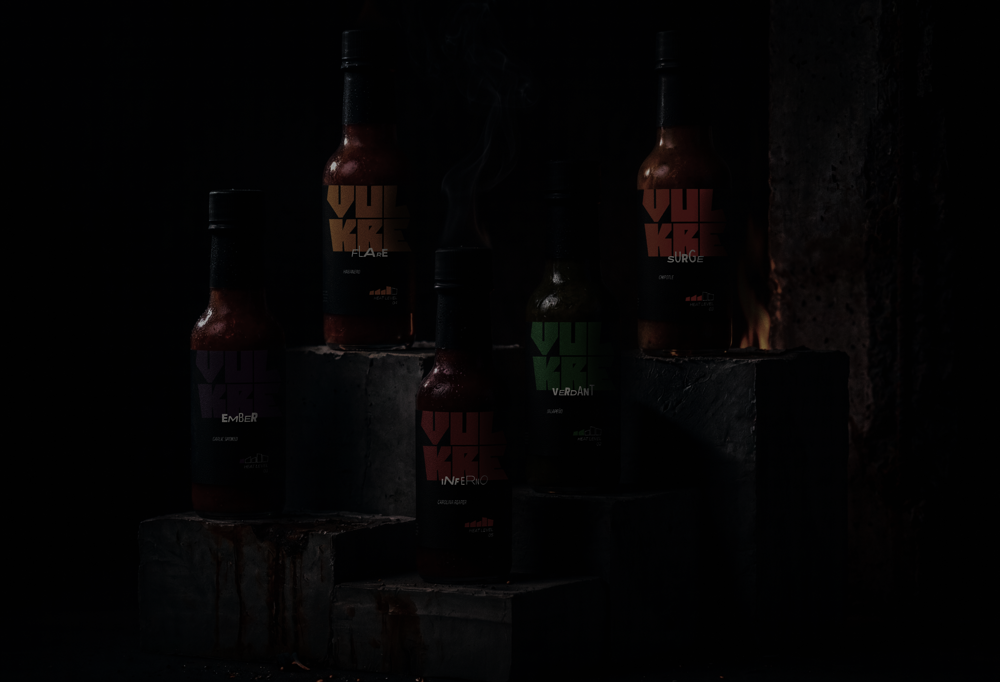
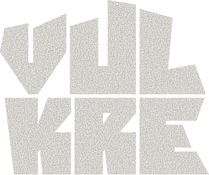
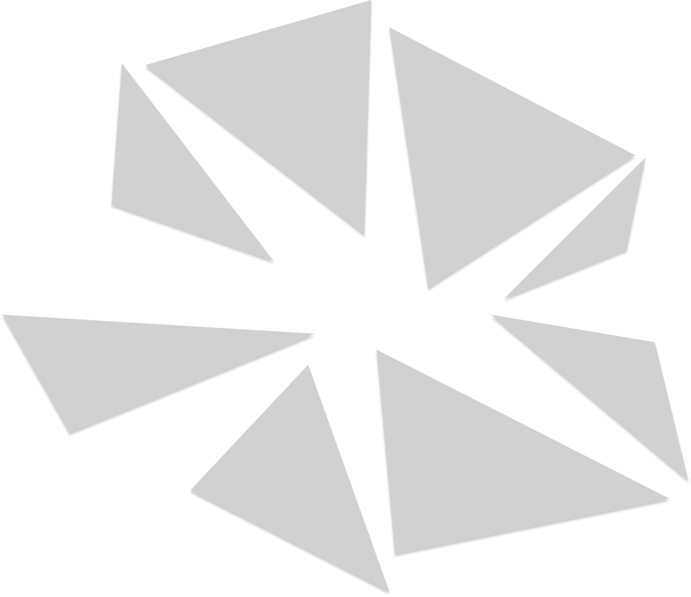
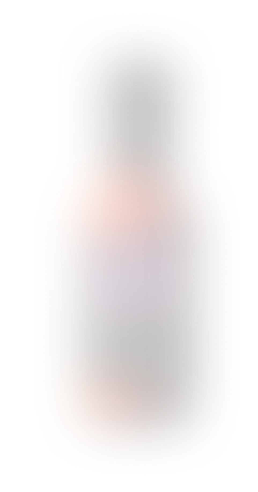
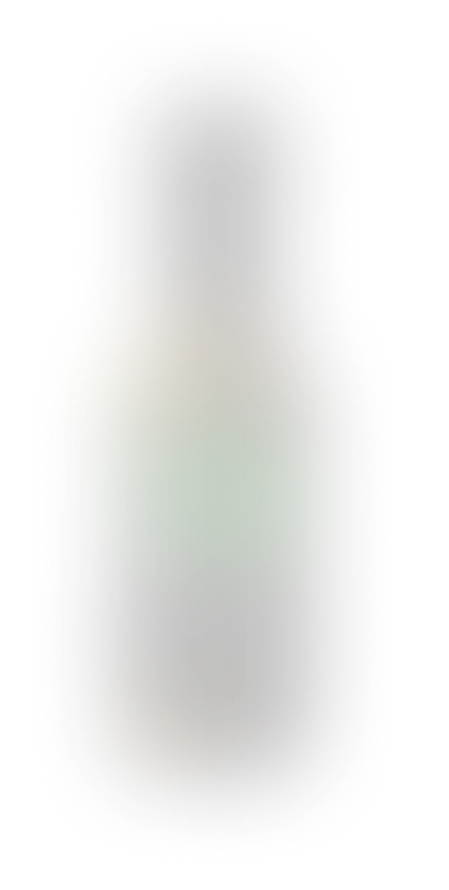
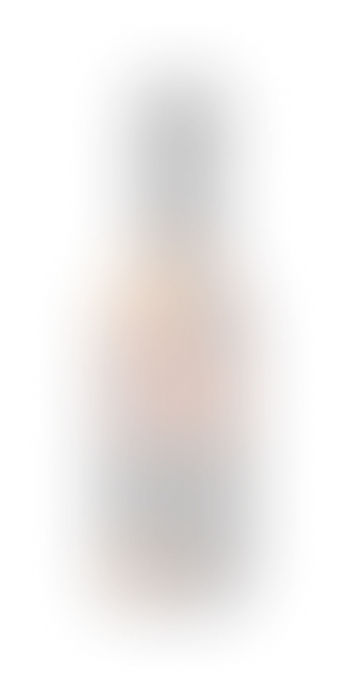
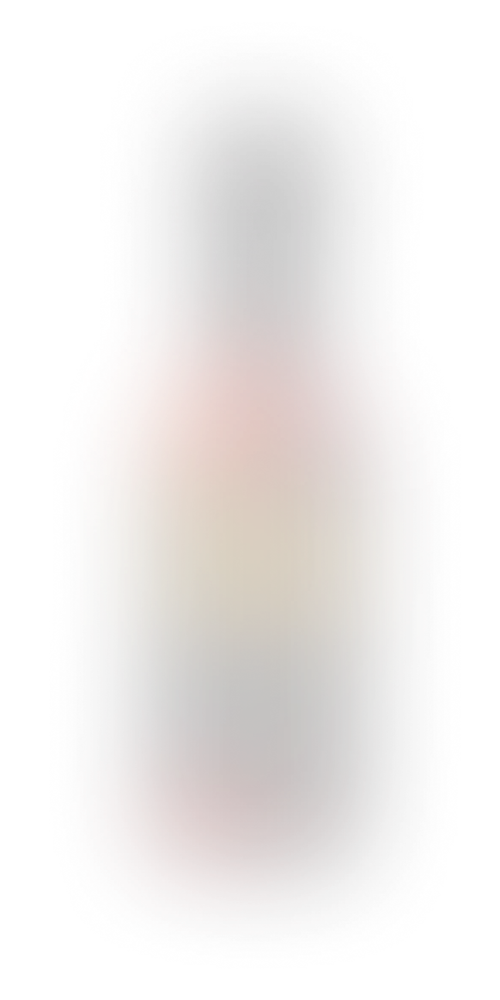
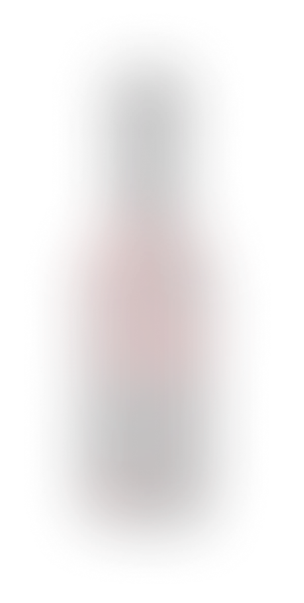
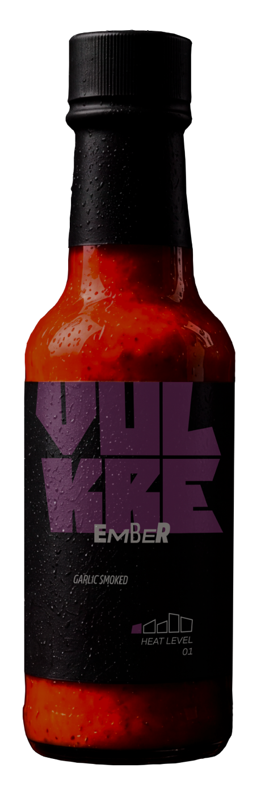
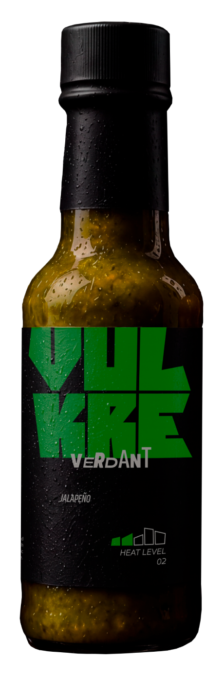
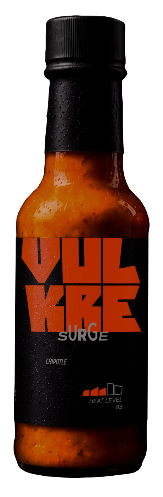
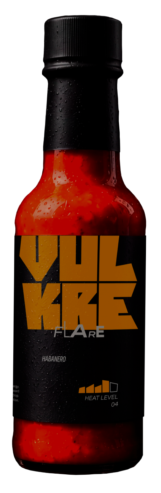
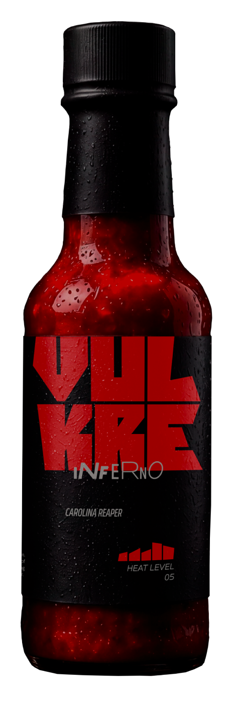
Forged through smoke, fire, and roasted garlic. Ember delivers deep warmth and lingering flavor. The first sign of an awakening force below the surface.
Emerging through fractured ground and untamed growth. Verdant delivers fresh jalapeño heat with a vibrant and energetic edge. Bright, alive, and impossible to ignore.
Rising from mounting pressure and smoky depths. Surge delivers rich chipotle flavor wrapped in a relentless wave of heat. The moment when the ground begins to move.
Ignited by intense heat and explosive energy. Flare delivers the fierce fruit-forward character of habanero in every drop. A warning sign moments before the eruption.
Unleashed from the heart of total eruption. Inferno delivers the relentless force of Carolina Reaper with uncompromising intensity. The final stage of volcanic power.
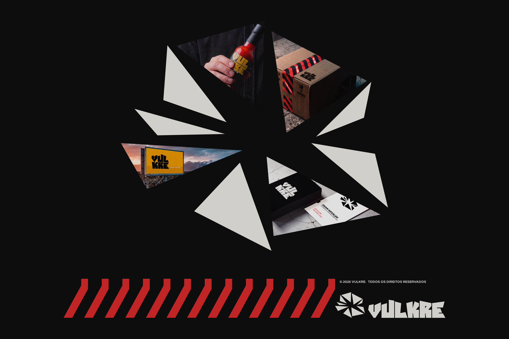
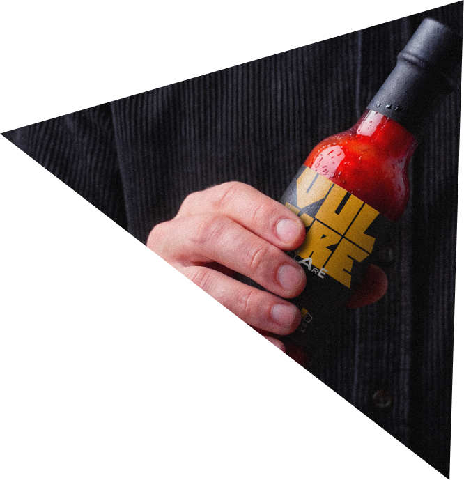
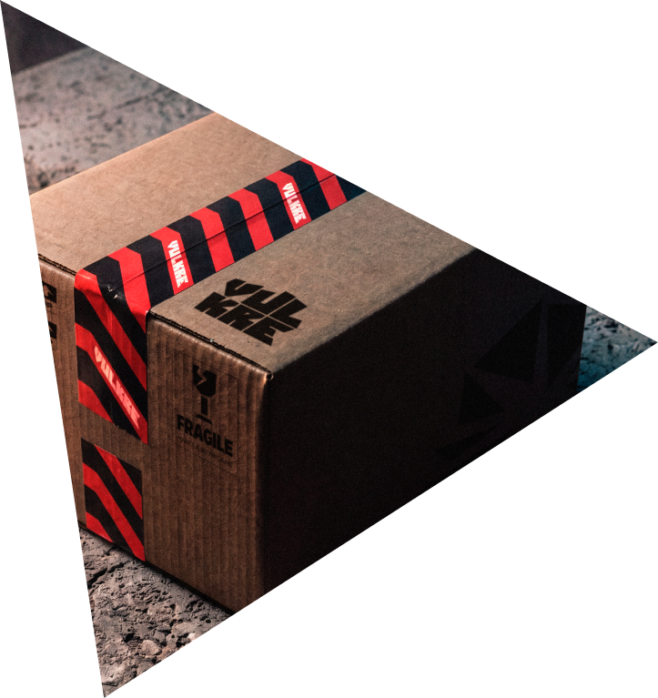
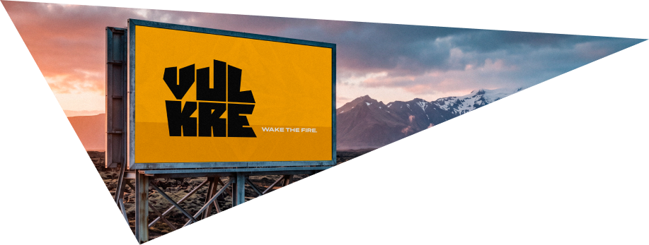
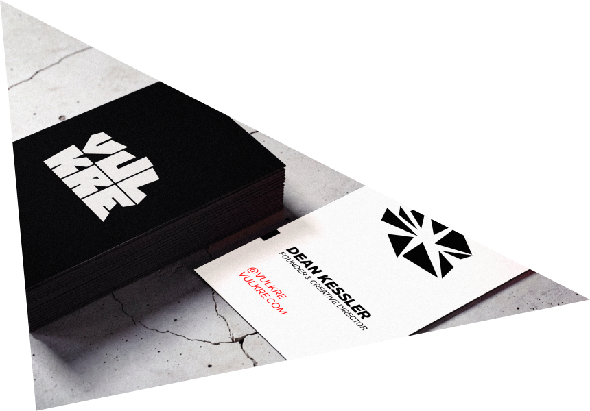